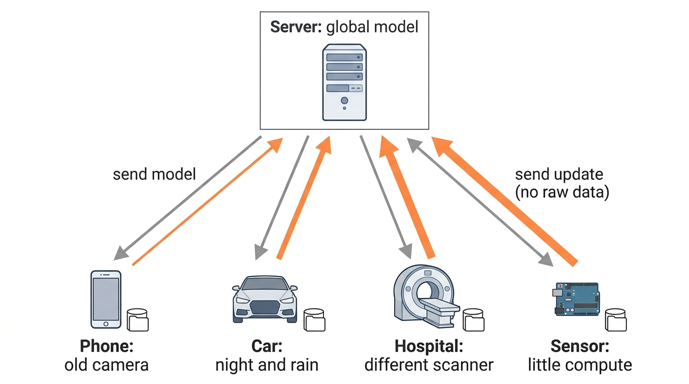

How Do We Build Robust Federated Learning Under Heterogeneous Clients?

In one sentence
When one shared model is trained across thousands of phones, cars and hospitals that each have different sensors, surroundings and computing power, how do we make sure the final model works reliably for every one of them — not just on average?
What is the problem?
Picture five hospitals that want to train one model to spot tumours in scans. Privacy rules mean none of them can send patient images anywhere. Federated learning solves this: a central server sends the current model to each hospital, each hospital improves it on its own data, and only the changes to the model — the update — travel back. The server averages the updates into a better global model, and the cycle repeats.
On paper it works beautifully. In practice the hospitals are not alike. One has a new scanner and another a ten-year-old one. One sees mostly elderly patients, another mostly children. One has a powerful server and can train for hours; another can only manage a few minutes a night. The averaged model might score well overall yet perform badly at exactly the hospital whose scanner is unusual.
Research has focused heavily on one kind of difference, called non-IID data — the fact that each client's data has a different mix of examples (one phone user types mostly in Korean, another in English). That is real, but it is only one layer. Clients also differ in device, sensor, environment and compute, and these differences interact.
This open problem asks: how do we guarantee the reliability of the global model when clients differ in all of these ways at once?

Why does it matter?
- Average accuracy hides the worst case. A model that is 95% accurate overall can be 70% accurate for a minority of clients — often the ones with older devices or rarer conditions.
- Fairness. If clients with weaker hardware contribute less, the global model drifts toward the needs of well-equipped clients.
- Safety-critical uses. Federated learning is proposed for cars, medical devices and industrial sensors, where a model that silently fails in one environment is dangerous.
- Trust in the whole system. Clients will only keep joining if the shared model actually works for them.
What would a solution look like?
It helps to separate the kinds of difference, because each one breaks training in its own way:
| Difference | Example | What it does to training |
|---|---|---|
| Data mix | One client sees mostly cats, another mostly dogs | Local updates pull the model in conflicting directions |
| Device & sensor | Different cameras, microphones, scanners | The same object looks different, so features learned on one device may not carry over |
| Environment | Day vs night, city vs countryside, season | Data shifts over time as well as between clients |
| Compute & connection | Powerful server vs battery-limited sensor | Some clients send small, late or no updates, so they are under-represented |
A robust system would handle all four rows together, and — crucially — come with a way to check that the global model is reliable for each kind of client, not just in total. That means reporting the worst-served group, not only the average.
The key idea: reliability per client, not just accuracy overall
Most federated learning methods are judged by the accuracy of the global model on a pooled test set. But no client ever sees the pooled test set; each sees only its own world. The question that actually matters to a client is: "does this model work on my data, captured by my device, in my environment?"
Shifting the goal from "high average" to "reliable for everyone" changes the design. The server may need to weight updates so that quiet clients are not drowned out, allow parts of the model to be personalised per device type, and keep checking — without seeing the data — whether some clients are being left behind. It also means knowing when the global model should not be trusted on a given client, which links directly to failure warnings (OP-01).
Why is it hard?
- The server is blind. It cannot look at any client's data, so it cannot directly see who is badly served or why.
- Differences are tangled. A client may have an unusual sensor and rare data and a slow connection. Methods usually address one difference at a time.
- Unusual is not the same as bad. An update that looks very different could come from a legitimately unusual client, or from a broken or malicious one. Robustness methods that discard outliers may throw away exactly the clients that most need help (see OP-11).
- Things change. Clients join and leave, devices get replaced, seasons change. A model that was reliable last month may not be now.
- Personalisation vs sharing. Tailoring the model to each client helps that client but weakens what everyone learns together.
What has been tried so far
- Federated averaging, the original method: average the clients' updates, weighted by how much data each has. Simple and effective when clients are similar.
- Keeping local training on a leash — adding a penalty so each client's model does not drift too far from the global one, or correcting for the direction each client tends to drift in.
- Normalising unequal work, so a client that trained for many steps does not dominate one that trained for few.
- Fairness-aware objectives that give more weight to clients where the global model does worst.
- Personalisation: shared core layers plus small client-specific parts, or grouping similar clients and training one model per group.
- Robust aggregation — taking medians or trimming extreme updates — mainly designed to resist attackers rather than to serve unusual honest clients.
Each of these handles one slice of the problem, mostly the data-mix slice. Much less work looks at device, sensor and environment differences together, or measures reliability per client type rather than accuracy overall.
How I would approach it
- Build a simulated federation where each client differs along several controlled axes: data mix, a simulated sensor change (blur, colour shift, noise), an environment change, and a compute limit.
- Turn each axis on alone and then in combination, and measure not only average accuracy but the accuracy of the worst-served client group.
- Test standard methods to see which axis hurts each one most — my guess is that sensor and compute differences are under-estimated today.
- Try combining a fairness-aware weighting with lightweight per-device personalisation, and check whether the worst-group accuracy improves without hurting the others.
- Add a label-free reliability check on each client, so the system can warn when the global model is likely to fail there.
Questions still open
- Which kind of difference — data, sensor, environment or compute — hurts global-model reliability most in realistic settings?
- Can we give a meaningful guarantee for the worst-served client, not just the average?
- How can the server tell a legitimately unusual client from a faulty or malicious one? (see OP-11)
- How should a client know, without labels, that the global model is not working on its data? (see OP-01)
- How should the system adapt when clients' devices and environments change over time?
- What is the right balance between one shared model and per-client personalisation?
This problem pairs naturally with OP-11, which asks how to spot unreliable clients without seeing their data. It also connects to the autonomous-driving problems — reliability under sensor failure (OP-15) and unseen situations (OP-13) — since fleets of cars are one of the most heterogeneous federations imaginable.
Work on this together
If you work on federated or distributed learning, deploy models across many different devices, or have a real federation where some clients are quietly being served badly, I would love to hear from you. Disagreeing with how I framed the problem is just as welcome.
Reach out about OP-10Further reading
- McMahan et al. — Communication-Efficient Learning of Deep Networks from Decentralized Data (AISTATS 2017)
- Kairouz et al. — Advances and Open Problems in Federated Learning (Foundations and Trends in Machine Learning 2021)
- Zhao et al. — Federated Learning with Non-IID Data (arXiv 2018)
- Li et al. — Federated Optimization in Heterogeneous Networks (MLSys 2020)
- Karimireddy et al. — SCAFFOLD: Stochastic Controlled Averaging for Federated Learning (ICML 2020)
- Wang et al. — Tackling the Objective Inconsistency Problem in Heterogeneous Federated Optimization (NeurIPS 2020)
- Li, Sanjabi, Beirami & Smith — Fair Resource Allocation in Federated Learning (ICLR 2020)
- Sattler, Müller & Samek — Clustered Federated Learning (IEEE Transactions on Neural Networks and Learning Systems 2021)